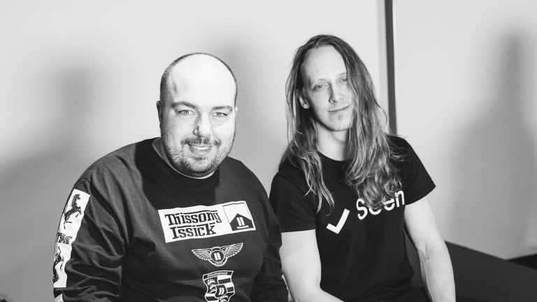
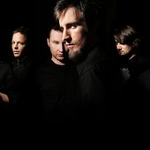
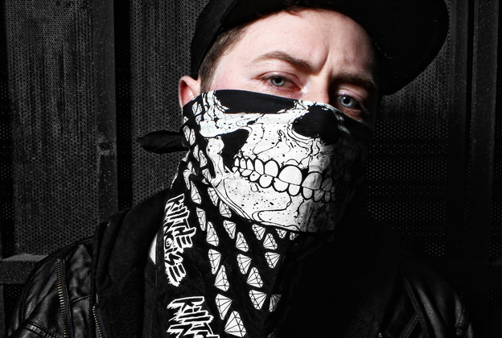
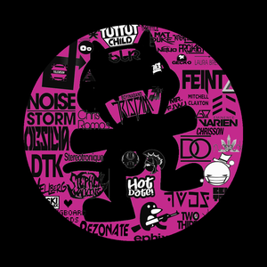
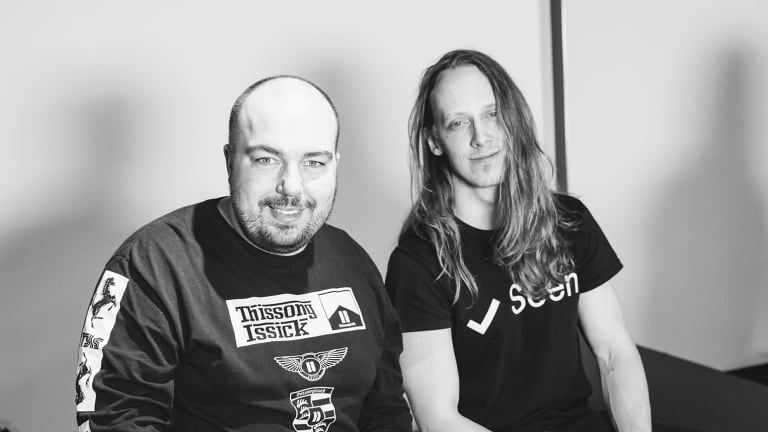
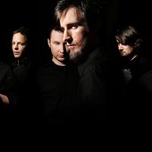
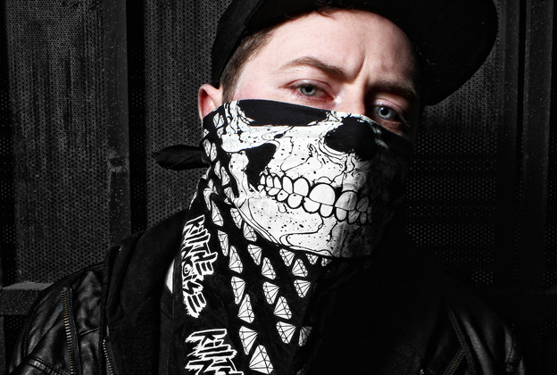

Algunos exponentes del Drumstep son:
Delta Heavy
Pegboard Nerds
Pendulum
Kill The Noise

Y no puede faltar Martin Garrix V:

Drumstep
Básicamente, es DnB de medio tiempo pero con las características de una pista de dubstep. Drumstep suele ser de 170bpm, pero puede estar en cualquier lugar entre 160-180, igual que drum & bass. El género se desarrolló a mediados de la década de 2000 y desde entonces ha ganado popularidad con nombres como Pendulum, Delta Heavy y Crissy Criss que producen melodías de ritmo continuo. Sin entrar demasiado técnico, drumstep crea la ilusión de un tempo más lento mediante la alteración de la estructura del ritmo típico DNB, por ejemplo, mediante la colocación de una trampa en la 3 rd batir en lugar de la 2 ª y 4 ª como es normal para el drum & bass. Sin embargo, drumstep también tiene fuertes influencias de dubstep y sigue los mismos patrones de melodía, solo que a un ritmo más rápido.
Algunos exponentes del Drumstep son:
Delta Heavy
Pegboard Nerds
Pendulum
Kill The Noise

Y no puede faltar Martin Garrix V: